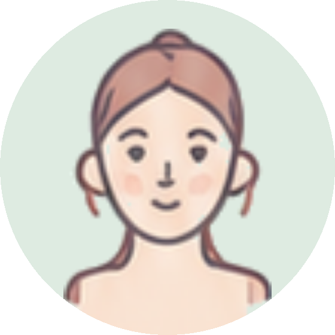

The only thing to port from this file is the motion layer: eight soap bubbles that drift, swell and pop around the existing avatar, plus the breathing halo behind it. Everything else on this page is scaffolding so you can see it in context.
opacity:1, scale(1)) and bb-float both starts and ends on that same keyframe. The drift, swell, pop and refill all happen in the middle of the cycle. That means a paused timeline, a screenshot, a print export or prefers-reduced-motion all degrade to bubbles sitting calmly around her face — never to an empty screen. Do not put the hidden state at 0%.